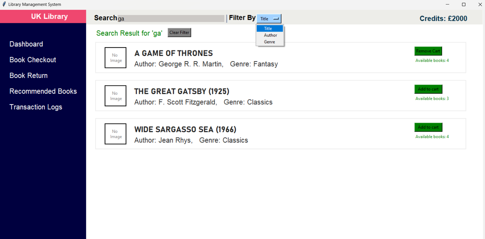
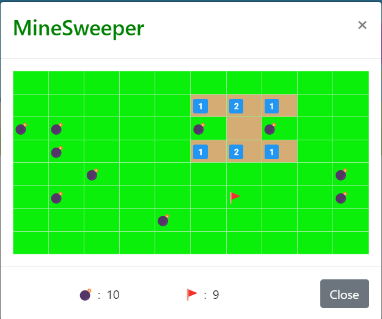

Hello! I'm Sabarivelan Ganesan.
Web Developer
Designing and coding beautifully simple things with love... and a sprinkle of whimsical wizardry!


I am a dedicated front-end web developer with three years of experience. My passion lies in creating visually stunning and user-friendly websites that provide exceptional user experiences. My focus is on blending aesthetics and functionality to craft engaging online journeys that captivate and inspire visitors. I thoroughly enjoy collaborating closely with clients and professionals, ensuring that I understand their goals and translate them into effective digital solutions.
My commitment to continuous learning drives me to stay updated with the latest trends and technologies in web development. This allows me to incorporate innovative solutions and best practices into my work, ensuring that the websites I create are of high quality and meet industry standards.
During my free time, I find joy in playing football and engaging in workouts that rejuvenate both my mind and body. I firmly believe that staying physically active enhances creativity and helps maintain a healthy work-life balance.
-
2019 - 2020
Zoho Corporation - Zoho Payroll
Project Trainee
As an intern at Zoho Corporation from 2019 to 2020, I embarked on an immersive learning experience in front-end development. During this time, I had the privilege of working alongside seasoned professionals and contributing to real-world projects. This internship served as a solid foundation for my career, allowing me to apply the knowledge acquired during my studies and gain practical insights into the industry. And also I had the opportunity to collaborate with cross-functional teams, learning to effectively communicate and work in a dynamic, agile environment. Under the guidance of experienced mentors, I contributed to the development of user interfaces, optimized website performance, and gained proficiency in industry-standard tools and technologies. This internship helped me understand the intricacies of front-end development, from writing clean and maintainable code to ensuring seamless user experiences.
-
2020 - 2022
Zoho Corporation - Zoho Payroll
Member Technical Staff
Building upon the success of my internship, I continued my journey at Zoho Corporation as a Member Technical Staff from 2020 to 2022. This role allowed me to take on more responsibilities and contribute to larger-scale projects. Working alongside talented colleagues, I played a pivotal role in developing innovative solutions, refining my technical expertise, and deepening my understanding of front-end development principles. And also I actively participated in the entire software development lifecycle, from gathering requirements and designing user interfaces to implementing robust coding solutions and conducting thorough testing. This experience further enhanced my problem-solving skills, attention to detail, and ability to deliver high-quality solutions within deadlines. Collaborating with diverse teams, including designers, product managers, and backend developers, I developed a holistic understanding of project management and the importance of teamwork in achieving successful outcomes.
-

As a Python enthusiast delving into the world of GUI development, I embarked on a captivating journey to create a Library Management System using the powerful combination of Python and Tkinter. With an eye for clean design and intuitive functionality, I crafted an efficient system that simplifies the management of library resources.
-

I conquered the challenge of creating a captivating Minesweeper game. Explore the mines, embrace the challenge, and let the fun begin!